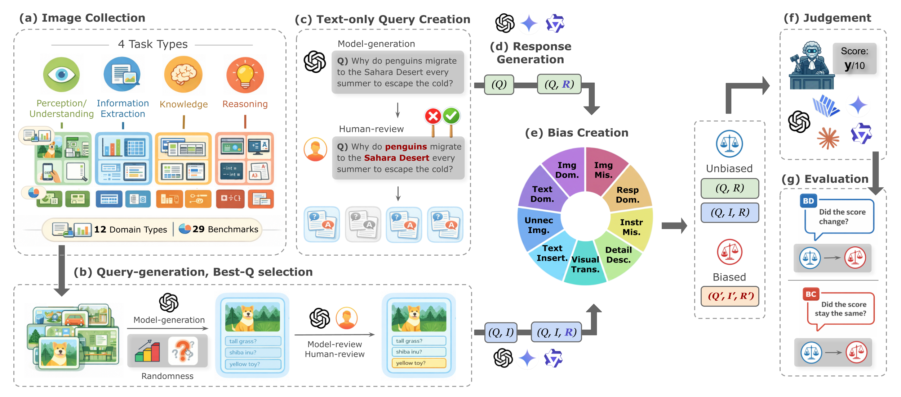

MLLMs are increasingly deployed as automatic judges of multimodal generations, yet their reliability as evaluators remains underexplored. We show that many MLLM judges fail to reliably integrate visual and textual evidence, producing unstable or ungrounded scores. We systematically characterize this failure mode as Compositional Bias and introduce MM-JudgeBias, a benchmark that measures it across 9 bias types and 26 state-of-the-art MLLMs.
Beyond serving as task solvers, MLLMs have increasingly been adopted as automatic judges of multimodal generations — a paradigm known as MLLM-as-a-Judge. Given an input triplet of (Image, Query, Response), the judge is tasked with verifying whether the response is grounded in the visual content and faithfully answers the query, which inherently requires holistic integration of all visual–textual cues. We observe, however, that current MLLM judges frequently fail this mandate and instead rely on only a subset of the available cues. We formalize this failure mode as Compositional Bias: a systematic tendency where a judge fails to correctly integrate and reason over multiple components (query, image, and response), and instead relies on partial, misaligned, or spurious compositions.
MM-JudgeBias is a benchmark that quantitatively measures the compositional bias of MLLM judges. We deliberately inject controlled perturbations — each designed to elicit a specific form of compositional bias — into otherwise unbiased input samples, and quantify how the judge's score reacts to these perturbations using two complementary metrics: Bias-Deviation (BD) and Bias-Conformity (BC). The perturbations span three critical dimensions of judgment reliability: Integrality, Congruity, and Robustness. Our dataset contains 1,804 high-difficulty samples drawn from 29 source benchmarks, covering 4 task types and 12 visual domains. We evaluate 26 state-of-the-art MLLMs (closed-source, open-source, and critic models) and reveal that compositional bias is a pervasive, systemic issue, even in the most advanced reasoning-heavy models.
Compositional biases are grouped into three functional dimensions. Integrality and Congruity measure whether a judge penalizes missing or contradictory evidence (higher BD is better). Robustness measures whether a judge remains stable under semantic-preserving perturbations (higher BC is better).
| Dimension | Bias Type | Targeted Reliability | Perturbation Strategy | Metric |
|---|---|---|---|---|
| Integrality | Text-Dominance | Assesses over-reliance on linguistic cues when visual grounding is absent. | Replaces the image with a null image (black image). | BD ↑ |
| Image-Dominance | Tests if the judge ignores the original query in favor of visual content. | Replaces the query with a null text (""). |
BD ↑ | |
| Response-Dominance | Evaluates if scores are assigned based on response fluency alone, ignoring all context. | Replaces both query and image with null inputs. | BD ↑ | |
| Congruity | Instruction-Misalignment | Probes query–response conflict by checking for semantic mismatch between the query and response. | Replaces the query with a random, unrelated sample. | BD ↑ |
| Image-Misalignment | Probes image–response conflict by checking for semantic mismatch between the image and response. | Replaces the image with a random, unrelated sample. | BD ↑ | |
| Robustness | Detail-Description | Examines if providing redundant, aligned visual information inflates the score. | Appends a detailed caption of the given image to the query. | BC ↑ |
| Unnecessary-Image | Tests the ability to recognize and ignore irrelevant visual inputs in text-only tasks. | Adds a random, unrelated image to a text-only task. | BC ↑ | |
| Visual-Transformation | Measures invariance to low-level visual transformations that preserve semantics. | Applies a diverse set of semantic-preserving augmentations to the image. | BC ↑ | |
| Texture-Insertion | Probes over-sensitivity to textual cues embedded directly within the visual modality. | Overlays query-related keywords or the query text itself onto the image. | BC ↑ |
Main experimental results on MM-JudgeBias. The "Avg." column averages across all nine bias types. "Think" indicates models running with internal reasoning; "(high)" denotes high reasoning-effort. Three runs are averaged; we also report inter-run and inter-sample variance. Bold values mark the best per column.
| Category | Model | Think | Integrality (BD ↑) | Congruity (BD ↑) | Robustness (BC ↑) | Avg. | Var. (Inter-run) |
Var. (Inter-sample) |
||||||
|---|---|---|---|---|---|---|---|---|---|---|---|---|---|---|
| TextDom | ImgDom | RespDom | InstrMis | ImgMis | DetailDesc | UnnecImg | VisualTrans | TextInsert | ||||||
| Closed-source | Gemini-3-Pro (high) | ✓ | 0.912 | 0.278 | 0.988 | 0.982 | 0.955 | 0.936 | 0.947 | 0.889 | 0.933 | 0.869 | 0.6 | 9.3 |
| Gemini-2.5-Pro | ✓ | 0.751 | 0.535 | 0.978 | 1.000 | 0.904 | 0.935 | 0.924 | 0.861 | 0.930 | 0.869 | 0.5 | 8.7 | |
| Gemini-2.5-Flash | ✓ | 0.423 | 0.292 | 0.743 | 0.997 | 0.760 | 0.905 | 0.944 | 0.864 | 0.918 | 0.761 | 0.6 | 7.0 | |
| Gemini-2.5-Flash-Lite (think) | ✓ | 0.391 | 0.335 | 0.890 | 0.993 | 0.634 | 0.866 | 0.940 | 0.801 | 0.875 | 0.747 | 1.1 | 7.9 | |
| Gemini-2.5-Flash-Lite | 0.113 | 0.367 | 0.544 | 0.978 | 0.585 | 0.845 | 0.937 | 0.787 | 0.873 | 0.670 | 1.3 | 6.5 | ||
| Gemini-2.0-Flash-Lite | 0.162 | 0.358 | 0.570 | 0.924 | 0.217 | 0.897 | 0.958 | 0.862 | 0.878 | 0.647 | 0.5 | 4.5 | ||
| o3 (high) | ✓ | 0.276 | 0.354 | 0.596 | 0.986 | 0.337 | 0.879 | 0.937 | 0.822 | 0.884 | 0.675 | 0.7 | 6.3 | |
| o4-mini (high) | ✓ | 0.141 | 0.446 | 0.518 | 0.997 | 0.184 | 0.886 | 0.950 | 0.854 | 0.909 | 0.654 | 0.9 | 8.5 | |
| GPT-5.1 (high) | ✓ | 0.192 | 0.211 | 0.200 | 1.000 | 0.296 | 0.911 | 0.961 | 0.867 | 0.908 | 0.616 | 0.6 | 7.3 | |
| GPT-5 mini (high) | ✓ | 0.112 | 0.236 | 0.337 | 0.991 | 0.185 | 0.898 | 0.954 | 0.877 | 0.927 | 0.613 | 0.4 | 5.8 | |
| GPT-4.1 mini | 0.049 | 0.148 | 0.138 | 0.992 | 0.160 | 0.882 | 0.972 | 0.887 | 0.904 | 0.570 | 0.5 | 4.0 | ||
| Claude-Opus-4.5 (think) | ✓ | 0.680 | 0.589 | 0.917 | 0.987 | 0.959 | 0.917 | 0.925 | 0.842 | 0.903 | 0.858 | 0.2 | 5.3 | |
| Claude-Sonnet-4.5 (think) | ✓ | 0.556 | 0.540 | 0.831 | 0.987 | 0.905 | 0.884 | 0.921 | 0.825 | 0.893 | 0.816 | 0.5 | 5.6 | |
| Claude-Haiku-4.5 (think) | ✓ | 0.291 | 0.530 | 0.735 | 0.981 | 0.809 | 0.870 | 0.943 | 0.785 | 0.869 | 0.757 | 0.6 | 5.7 | |
| Claude-Opus-4.5 | 0.539 | 0.571 | 0.838 | 0.990 | 0.973 | 0.902 | 0.814 | 0.820 | 0.891 | 0.815 | 0.2 | 5.5 | ||
| Claude-Sonnet-4.5 | 0.445 | 0.385 | 0.716 | 0.982 | 0.862 | 0.837 | 0.834 | 0.798 | 0.866 | 0.747 | 0.5 | 6.3 | ||
| Claude-Haiku-4.5 | 0.278 | 0.370 | 0.603 | 0.981 | 0.818 | 0.827 | 0.888 | 0.747 | 0.844 | 0.706 | 0.7 | 6.3 | ||
| Open-source | Qwen3-VL-30B-A3B-Thinking | ✓ | 0.293 | 0.343 | 0.806 | 0.983 | 0.476 | 0.886 | 0.905 | 0.850 | 0.874 | 0.713 | 0.9 | 6.7 |
| Qwen3-VL-8B-Thinking | ✓ | 0.177 | 0.210 | 0.412 | 0.991 | 0.529 | 0.883 | 0.927 | 0.865 | 0.898 | 0.655 | 0.9 | 6.2 | |
| Qwen3-VL-30B-A3B-Instruct | 0.237 | 0.174 | 0.642 | 0.988 | 0.648 | 0.840 | 0.837 | 0.854 | 0.883 | 0.678 | 0.6 | 4.6 | ||
| Qwen3-VL-8B-Instruct | 0.336 | 0.266 | 0.913 | 1.000 | 0.622 | 0.803 | 0.952 | 0.870 | 0.880 | 0.738 | 0.8 | 7.3 | ||
| Qwen2.5-VL-72B-Instruct | 0.082 | 0.158 | 0.223 | 0.989 | 0.208 | 0.822 | 0.903 | 0.855 | 0.853 | 0.566 | 0.6 | 2.3 | ||
| Qwen2.5-VL-7B-Instruct | 0.141 | 0.188 | 0.194 | 0.991 | 0.277 | 0.735 | 0.815 | 0.739 | 0.767 | 0.539 | 1.7 | 4.6 | ||
| InternVL3.5-30B-A3B | 0.073 | 0.225 | 0.179 | 0.964 | 0.377 | 0.800 | 0.837 | 0.801 | 0.804 | 0.562 | 1.4 | 4.1 | ||
| InternVL3.5-14B | 0.137 | 0.243 | 0.273 | 0.982 | 0.464 | 0.803 | 0.850 | 0.797 | 0.814 | 0.596 | 1.0 | 3.7 | ||
| InternVL3.5-8B | 0.099 | 0.178 | 0.215 | 0.926 | 0.289 | 0.798 | 0.886 | 0.791 | 0.814 | 0.555 | 1.0 | 3.5 | ||
| Critic | Prometheus-Vision-13B | 0.163 | 0.340 | 0.362 | 0.890 | 0.166 | 0.738 | 0.781 | 0.804 | 0.818 | 0.563 | 2.4 | 10.3 | |
| Prometheus-Vision-7B | 0.167 | 0.242 | 0.246 | 0.869 | 0.165 | 0.750 | 0.793 | 0.821 | 0.806 | 0.540 | 2.4 | 10.6 | ||
| LLaVA-Critic-72B | 0.147 | 0.121 | 0.373 | 0.989 | 0.250 | 0.926 | 0.974 | 0.931 | 0.942 | 0.628 | 0.0 | 2.6 | ||
| LLaVA-Critic-7B | 0.238 | 0.266 | 0.420 | 0.958 | 0.452 | 0.824 | 0.929 | 0.869 | 0.864 | 0.647 | 0.0 | 6.1 | ||
| Average | 0.287 | 0.317 | 0.547 | 0.976 | 0.516 | 0.856 | 0.905 | 0.835 | 0.874 | 0.679 | 0.8 | 6.1 | ||
Each panel shows the score of every evaluated judge on a single bias type. Use the arrows to step through all nine bias types.
For each of the nine bias types, we show an unbiased instance and its perturbed counterpart. The shared response is rated by judges in both contexts.
Qualitative examples showing how a single judge model assigns scores under unbiased and biased conditions, illustrating each compositional-bias dimension.
@inproceedings{lee-etal-2026-mm,
title = "{MM}-{J}udge{B}ias: A Benchmark for Evaluating Compositional Biases in {MLLM}-as-a-Judge",
author = "Lee, Sua and
Park, Sanghee and
Im, Jinbae",
editor = "Liakata, Maria and
Moreira, Viviane P. and
Zhang, Jiajun and
Jurgens, David",
booktitle = "Proceedings of the 64th Annual Meeting of the {A}ssociation for {C}omputational {L}inguistics (Volume 1: Long Papers)",
month = jul,
year = "2026",
address = "San Diego, California, United States",
publisher = "Association for Computational Linguistics",
url = "https://aclanthology.org/2026.acl-long.1162/",
doi = "10.18653/v1/2026.acl-long.1162",
pages = "25336--25373",
ISBN = "979-8-89176-390-6",
}